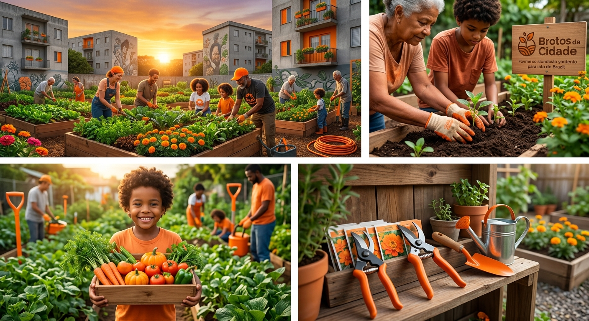

Quem somos?

A Brotos da Cidade é uma iniciativa que
transforma terrenos ociosos e abandonados em hortas
comunitárias vibrantes. Mais do que plantar alimentos
orgânicos, nós cultivamos conexões entre vizinhos,
levamos o verde de volta para o espaço urbano e
promovemos a educação ambiental de forma prática,
colaborativa e acessível para todos.
Resgatando a terra e a vizinhança
Vivemos em cidades cada vez mais cinzas, onde espaços
abandonados acumulam entulho, geram insegurança e degradam
o ambiente. Ao mesmo tempo, o acesso a alimentos frescos e
livres de agrotóxicos costuma ser caro e distante da
realidade de muitas famílias. Somado a isso, a rotina
acelerada nos afasta das pessoas que vivem ao nosso lado.
A Brotos da Cidade nasceu para combater exatamente esse
cenário: nós ocupamos vazios urbanos com vida, garantimos
comida de verdade na mesa da comunidade e resgatamos o
senso de pertencimento e união nos bairros.